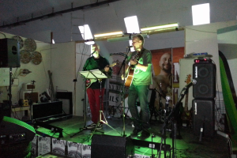
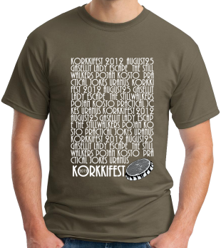
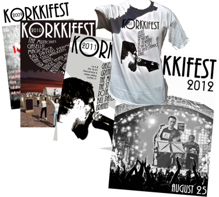
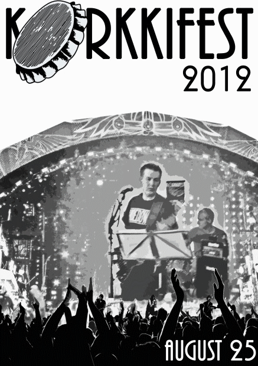
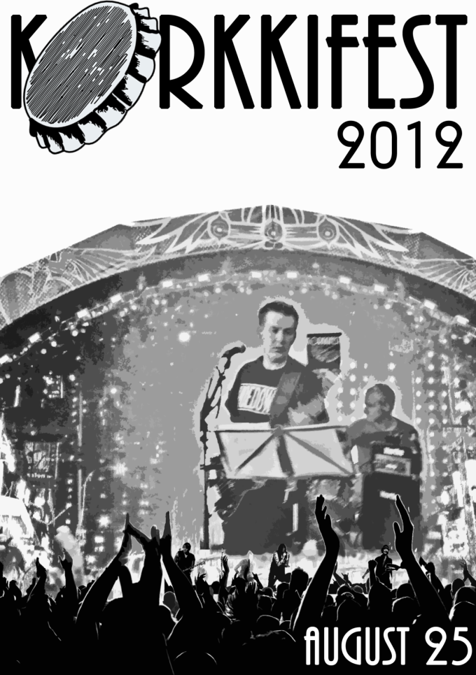
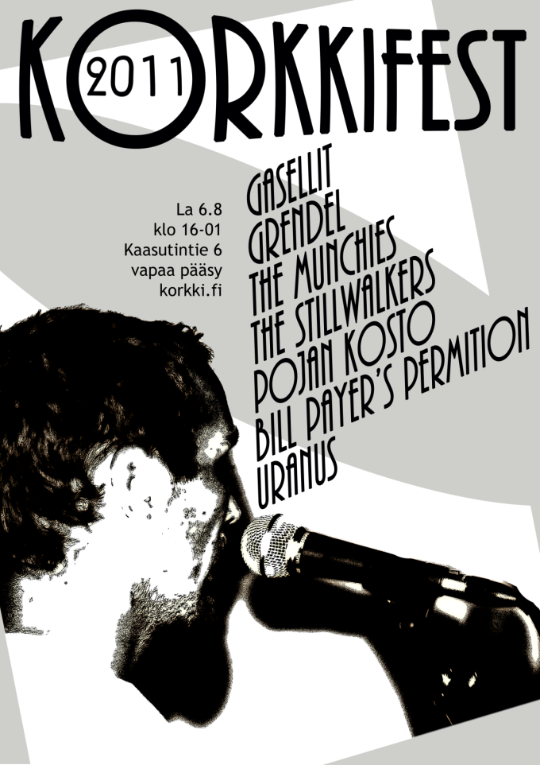
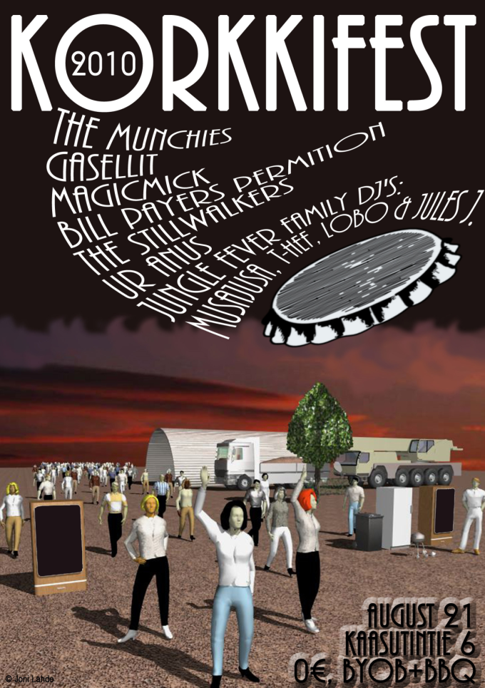

Esiintyjät
Kaikki oikeudet muutoksiin pidätetään.
Korkkifest 2013
-

Pojankosto
Isä-poika-duo, joka on valloittanut festariyleisön jo kahtena edellisenä vuonna.
Uranus
Covereita soittava ullakkobändi.
DJs
Jules, Ibusal, Musa etc.

Korkkifest 2012
-
Gasellit
Gasellit on Pohjois-Helsinkiläinen nelihenkinen rap-yhtye. Bändi koostuu kolmesta solistista; Päkä, Hätis & Thube Hefner sekä tuottaja/dj/teknikko Musajusasta. Gasellit on perustettu 2008 ja ensimmäinen pitkäsoitto "Kiittämätön" ilmestyi 4.4.2012 (Monsp Records).
-
Lady Escape
Lady Escape on helsinkiläinen indie rock -yhtye, joka on perustettu 2004. Lady Escape ammentaa musiikkiinsa vaikutteita varsin laajasti. Usein vertaukset kääntyvät yhdysvaltalaisten vaihtoehtorock-yhtyeiden puoleen. Yhtye on julkaissut kaksi albumia sekä kaksi EP-levyä.
-
The Stillwalkers
The Stillwalkers on turkulainen alternative/indie rock -musiikkia soittava yhtye, johon kuuluu viisi jäsentä: Atte (pasuuna), Iiro (rummut), Marko (laulu, kitara), Ninni (trumpetti) ja Tuomo (laulu, basso). Yhtyeen debyytti-ep Everytune ilmestyi joulukuussa 2012.
-
Pojan kosto
Isä ja poika liekeissä.
-
Practical Jokes
No further information available.
-
Uranus
Covereita soittava ja laiskasti harjoitteleva ullakkobändi. Uudistunut edellisvuosista laulajan vaihduttua ja saatuaan soolokitaristin riveihinsä.
Festaripaita
Festareiden kulut on perinteisesti katettu t-paitojen myyntituotoilla ja tyhjillä pulloilla.
Korkkifest 2013
Varaa käteistä tapahtumaan, paitoja on myynnissä paikan päällä. Tarkempia tietoja tämän vuoden paidasta ei vielä saatavilla.
Korkkifest 2012
Festaripaidan tilausten vastaanottaminen on päättynyt. Varaa käteistä tapahtumaan, paitoja on myynnissä paikan päällä 20 euron hintaan.
Paita on Gildan ja väri Olive. Tarjolla on koot S, M, L, XL ja XXL. Järjestäjät pidättävät kaikki oikeudet paitamuutoksiin.
Paitojen myynnin tuotto käytetään edellisvuosien tapaan suoraan festarin järjestämisen kuluihin.
Arkisto
Edellisten vuosien Korkkifest -tapahtumien materiaalia.
Korkkifest 2012
Korkkifest 2012 järjestettiin 25.8.2012.
Korkkifest 2011
Korkkifest 2011 järjestettiin 6.8.2011.
Korkkifest 2010
Korkkifest 2010 järjestettiin 21.8.2010.
Korkkifest 2009

Ensimmäinen Korkkifest järjestettiin 8.8.2009.
Info
Korkkifest 2013 järjestetään lauantaina 17.8.2013 Helsingin Tattarisuolla. Tapahtumapaikkana on punainen teräskaarihalli ja piha-alue osoitteessa Kaasutintie 6.
View Larger Map
Pelipaikoille pääsee helposti busseilla 75 ja 77A, jotka kulkevat Tattariharjuntietä (kävelyä alle 500 m).
Ensimmäinen esiintyjä aloittaa klo 17 maissa ja meininki jatkuu myöhäiseen iltaan asti.
Lisätietoja: info@korkki.fi